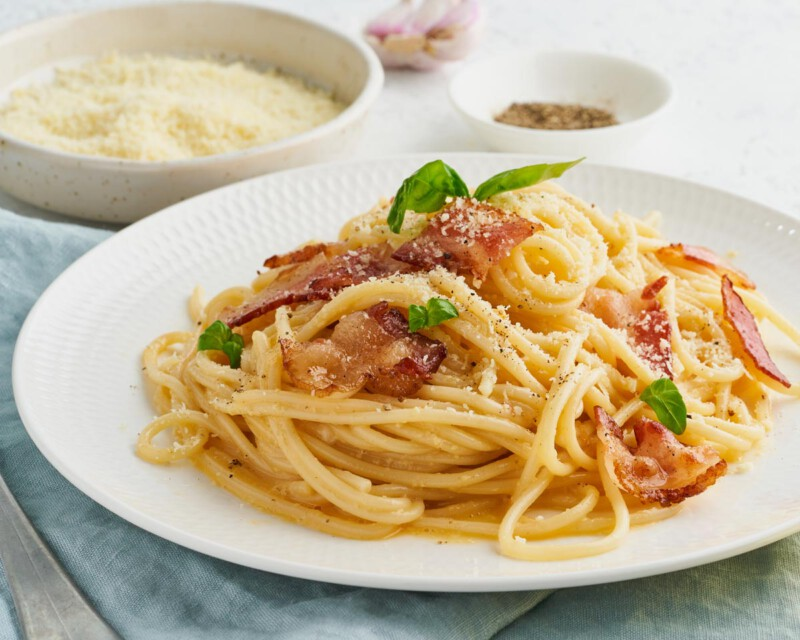

Recetario 1ºDAM
Inicio
Recetas
Sube tu Receta
Todas
Primeros
Principales
Postres
Ensalada fresca de aguacate y tomate
Sopa de calabaza
Tortilla de papas

Pasta carbonara
Pollo al horno con hierbas
Salteado de verduras con tofu
Tarta de manzana
Brownie de chocolate